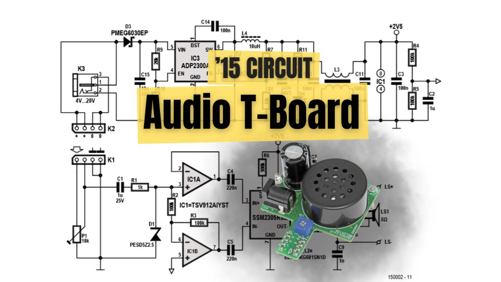
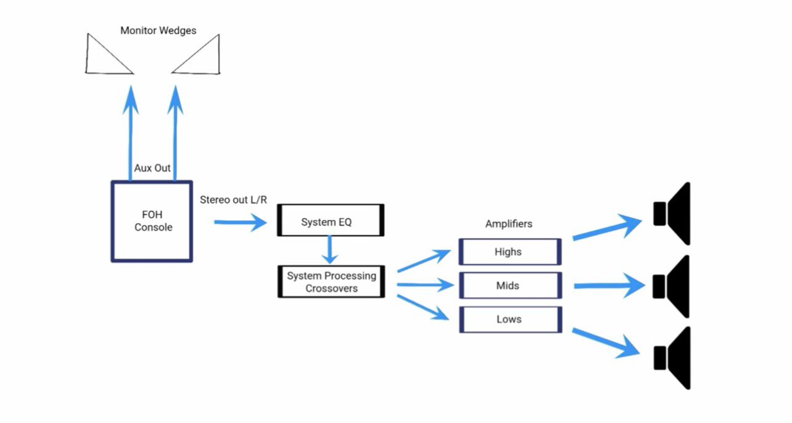
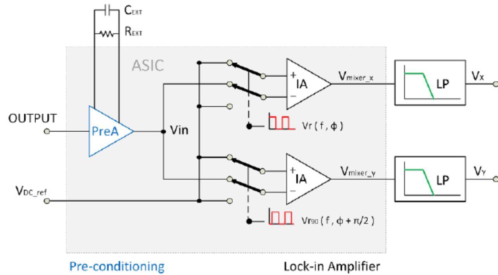
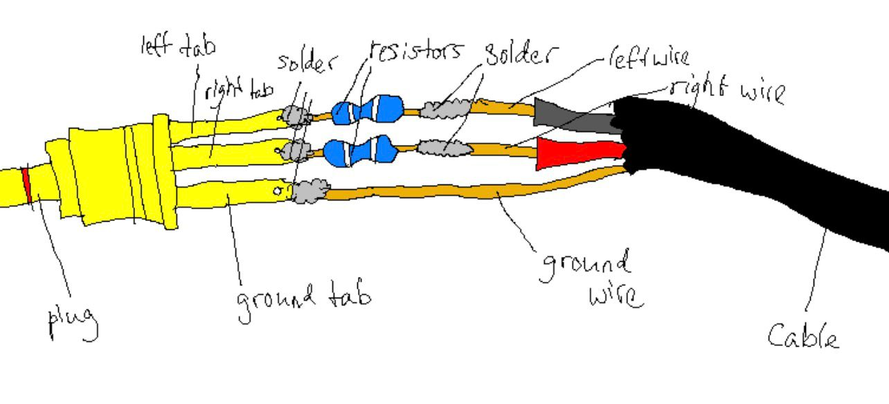

Radio-Elektronika: Qəbuledici Qurğunun Yığılması
Bu məqalədə klassik analoq radio qəbuledicisinin yığılma prosesi və istifadə olunan elektron komponentlərin funksiyaları izah olunur.




📦 İstifadə Olunan Komponentlər
- Ferrit Anten
- Dəyişən Kondensator (Tuning)
- Elektrolit Kondensatorlar
- Rezistorlar
- Potensiometr
- Dinamik (8 Ohm)
- Tranzistorlar / Gücləndirici IC
🛠️ Texniki Proses
Radio dalğalarının qəbulu ferrit anten və dəyişən kondensatordan ibarət olan rəqs konturu vasitəsilə həyata keçirilir. Seçilmiş tezlik gücləndirici mərhələyə ötürülür və burada zəif siqnal dinamiki işlədə biləcək səviyyəyə qədər artırılır.
